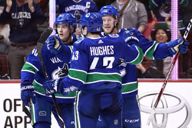

Vancouver Canucks
The Vancouver Canucks are a hockey team with a lot of good young players. Here is a link to their offical website:
Vancouver Canucks.com

The Vancouver Canucks was a team formed on 1945 but they joined the NHL in 1970, So currently makeing the team 50 years old. The Vancouver canucks had made it to the final game of the playoffs 3 times. One being in 1982 against the New York Ilander, the second time being in 1994 against New York Ranger, and in 2011 against the Boston Bruins. But not only that they had gone to the playoffs in 2015 losing in first round against Calgary Flames. Right after 2015 the Canucks had a lot of trouble making the playoffs, and over time they have gotten better being First in the pacific division and 11th in the whole league. On February 12th 2020 Henrick and Daniel retired their numbers, and not only that the Canucks won the game 3 to 0 against the Chicago Blackhawks.
Here is a video of Henrick and Daniel retire their numbers.
Bibliography:
(2020, February 13). Canucks Retire The Sedin Twins’ Jerseys. YouTube. Retrieved February 18, 2020, from https://www.youtube.com/watch?v=AAAb7gf8LcM=41s
This source is valid because this the Vancouver Canucks official website, and on that they post important things going on.
Vancouver, O., NHL.com, W. (1970, January 1). Official Vancouver Canucks Website. NHL.com. Retrieved February 18, 2020, from https://www.nhl.com/canucks
This video is Valid because this talks about the important events that happened, and the video is also not to long.
(1970, January 1). https://www.espn.com/nhl/team/_/name/van/vancouver-canucks. Vancouver Canucks. Retrieved February 18, 2020, from https://www.espn.com/nhl/team/_/name/van/vancouver-canucks
This source is valid because it talks about the games, So like what happens in the game and what the final score is.
(n.d.). Vancouver #Canucks (@canucks) Instagram Photos And Videos. Retrieved February 18, 2020, from https://www.instagram.com/canucks/?hl=en
The Canucks official Instragram is valid because it talks about the special events.